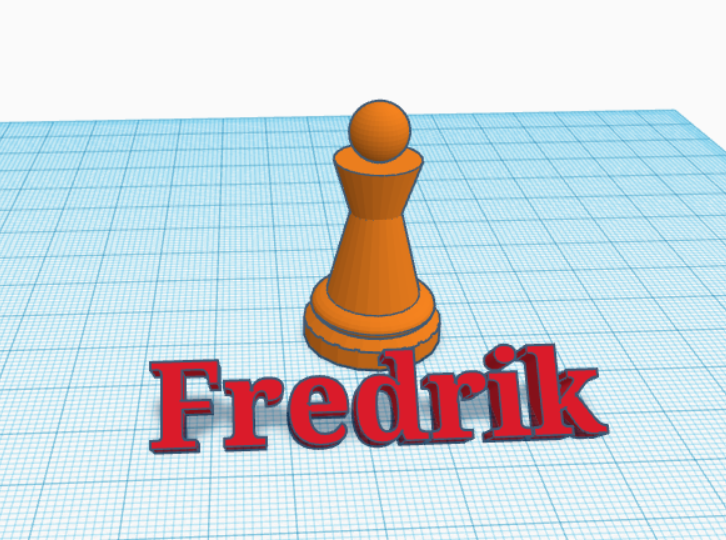
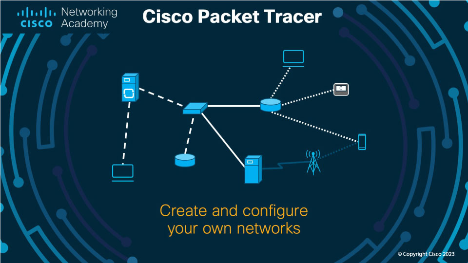

Heim
Om meg
Fag
Teknologiforståelse
Konseptutvikling og programmering
Produksjon og historieforteljing
Nokon av mine verk frå Teknologiforståelse.
Beskriving:
Teknologiforståelse skal utvikle eleven sin forståing og kompentanse for problemløysning i faget

Sjakkbrikke på tinkercad
Tannhjul og spelebrikke på tinkercad
Me har brukt Cisco packet tracer for å teste netverkssystemer utan fysisk utstyr.
